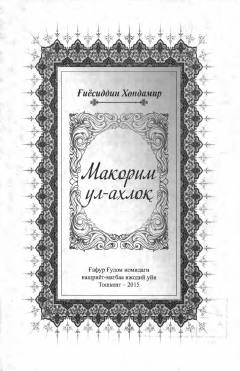

MUAlisher Navoiyning hayoti va faoliyatiga bag'ishlangan tarixiy-biografik asar.
Ushbu asar buyuk mutafakkir Alisher Navoiyning hayoti, ijtimoiy-siyosiy faoliyati va yuksak insoniy fazilatlari haqida qimmatli ma'lumotlarni o'z ichiga olgan tarixiy manbadir. Kitob muallifi G'iyosiddin Xondamir Navoiyning shaxsiyati va uning davlat boshqaruvidagi o'rni hamda madaniy taraqqiyotga qo'shgan hissasini batafsil yoritib beradi.